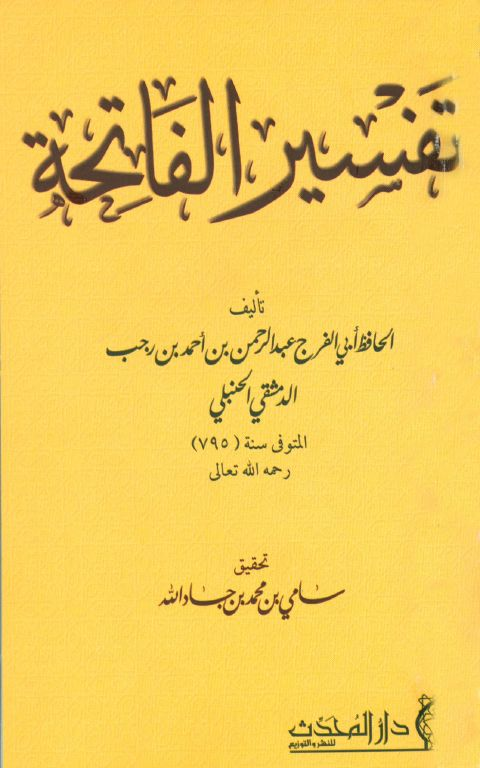
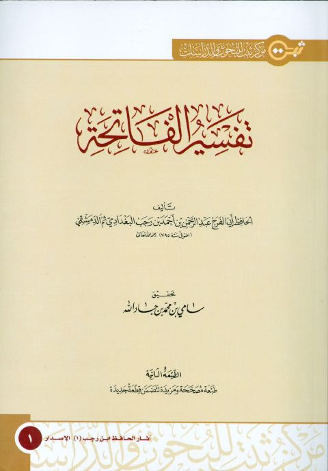
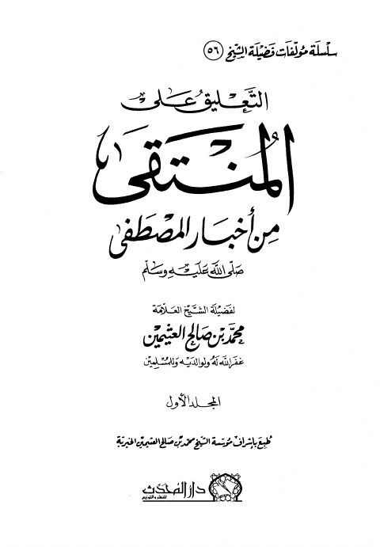
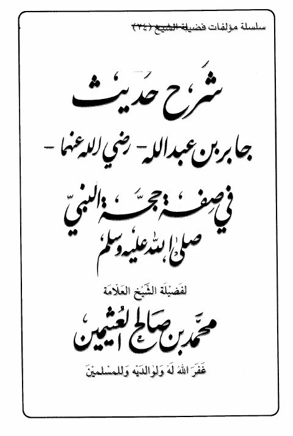

تفسير الفاتحة- دار المحدث تفسير الفاتحة- دار المحدث عبد الرحمن بن أحمد بن رجب الدمشقي الحنبلي
تفسير الفاتحة- ط2 تفسير الفاتحة- ط2 عبد الرحمن بن أحمد بن رجب الدمشقي الحنبلي
التعليق على المنتقى من أخبار المصطفى ﷺ التعليق على المنتقى من أخبار المصطفى ﷺ محمد بن صالح العثيمين
شرح حديث جابر بن عبد الله في صفة حجة النبيﷺ- ط. دار المحدث شرح حديث جابر بن عبد الله في صفة حجة النبيﷺ- ط. دار المحدث محمد بن صالح العثيمين